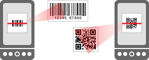

Viinikoodi viivakoodinlukija ohjelmalla voit selvitt‰‰ helposti lis‰tietoa viineist‰. Viinikoodi-ohjelman luettua viinin viivakoodin, se ohjaa k‰ytt‰j‰n viinin tietoihin Alkon sivuille.

Viinikoodi-ohjelma selvitt‰‰ viivakoodin avulla, mik‰ viini on kyseess‰. Viivakoodia vastaalla Alkon tuotenumerolla viini varsinaisesti tunnistetaan.
Valitettavasti kaikkia viivakoodeja ja niit‰ vastaavia Alkon tuotenumeroita ei viel‰ ole tiedossa palvelussamme. Tiedon puuttuessa ohjelma voi pyyt‰‰ sinua antamaan Alkon tuotenumeron. Toivomme n‰in ker‰‰v‰mme loputkin tuntemattomat koodit. Kiitoksia jo etuk‰teen!
Nautinnollisia hetki‰ Viinikoodi-ohjelman ja ennen kaikkea viinien parissa!